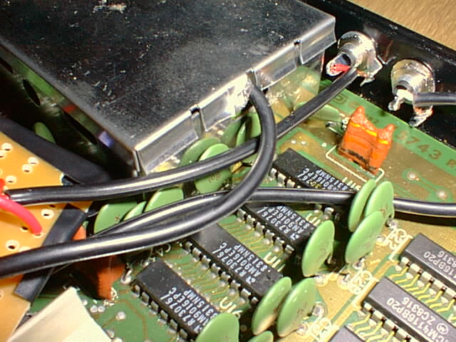
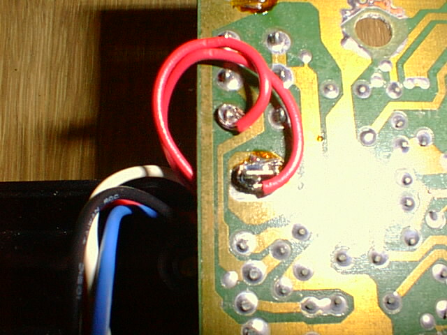
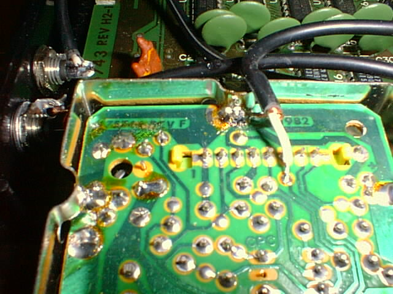
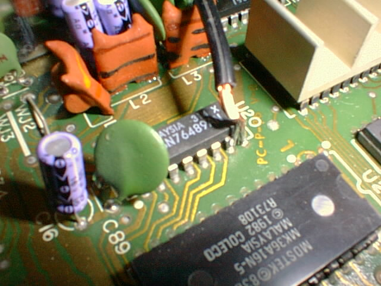
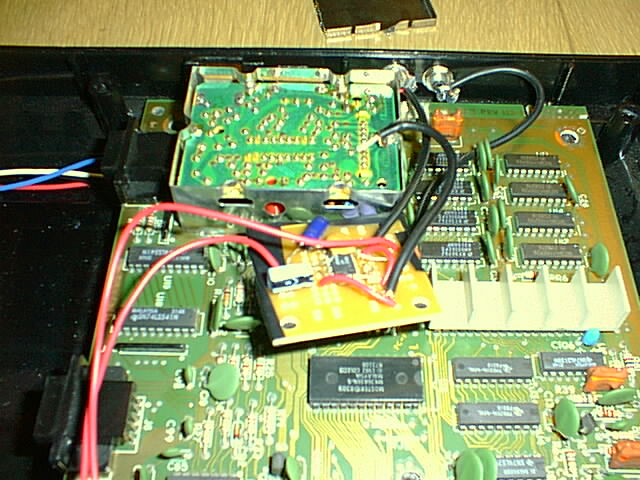
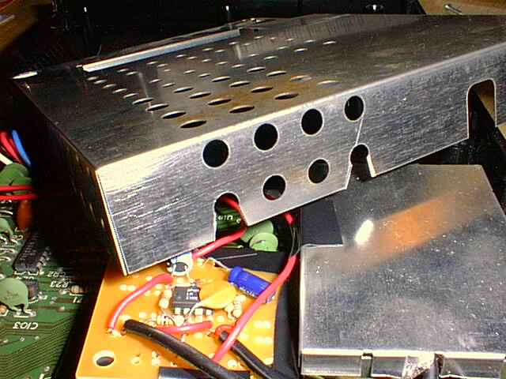
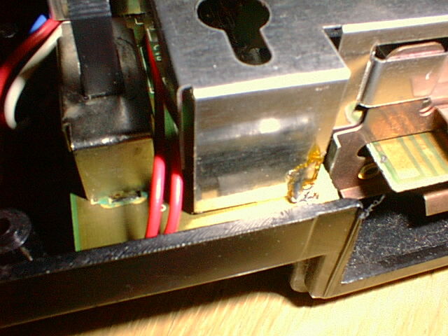

Colecovision A/V output modification
You will need:
- assembled video amp board (schematic, circuit layout)
- about 2ft of extra RCA cable (thin shielded stranded cable)
- about 2ft of approx. 22 gauge stranded wire (for power and for wiring up circuit)
- two panel-mount RCA jacks
- some electrical tape
- a drill and a 1/4” bit
- mad soldering skillz
- an oscilloscope would be helpful, but not completely necessary
- a voltmeter would be more helpful, and is slightly more necessary
The video amp board requires the following parts:
- circuit board of some sort (we used 1/2 of a radio shack “dual general-purpose ic pc board” cat. no. 276-159B)
- LM318N (IC1)
- 2x 10k resistors (R1,R2)
- 2x 150 ohm resistors (R3,R4)
- 27pF capacitor (C1)
- >1uF capacitor (C2 - see schematic)
- 47uF capacitor (C3)
- First step: Open up the colecovision's plastic case and metal shield. This is a pain.
- Next: Drill some 1/4" holes where you want your A/V jacks. You'll need to
put them just above the mainboard so that they don't interfere with anything.
the finished project will look something like this:
 so plan accordingly. - Then mount the RCA jacks in the holes using the supplied nuts and washers.
- Locate the power connection and solder a wire to ground and a wire to
switched +12V.
 On the other side of the board is the power switch. The bottom wire is soldered to the switch's ground connection and the top wire is soldered to the +12V post-switch. If you have a multimeter, it's a good idea to plug in power and test that +12V does indeed switch on and off when you flip the switch. - To both the ground and switched +12V pads solder about 7-8 inches of stranded wire (tinning the wires first will help immensely). These will supply power to the video amplifier circuit.
- Locate the video input connection to the RF modulator under the small shield
(just pop the top of the shield off). It's the third pin from the end and it
has a test pad adjacent to it (there's a "1" labelling pin 1, so it's really
pin 6 on the connector). see diagram:
 - Strip some of the RCA cable, separate the shield, and strip the inner conductor. Twist the strands of both the ground shield and the signal wire and tin them both. Solder the RCA cable ground shield to the existing ground connection at the RF shield. Solder the signal wire to the empty test pad provided for our convenience. It should then look like the above. Cut the RCA cable about 4-5 inches from the connection point. It will feed into the amplifier circuit which will sit next to the shielded modulator section.
- Locate the audio chip. It's a Texas Instruments SN76489AN located near the
center of the motherboard. Pin 7 is the audio output, and, conveniently, pin
8 is ground. Cut another ~6in RCA cable and strip and tin it, then solder
the ground to 8 and the signal to 7. like so:
 Unfortunately, the actual solder connection is a little blurry in that picture. This one is tricky, and tinning the wire is essential. - Now you can connect everything up. Power, ground, and video in connect to
your video amp board as shown. The RCA cable from the
audio chip goes right to the RCA jack (the SN76489 will drive up to 10mA).
You'll need another ~5in length of RCA cable to connect the video out on the
amplifier board to the video output RCA jack.
 - You are now finished electrically. cover up the bottom of the video amp board with a piece of paper, hook up a monitor, a cartridge, controller, and power, and try it out. If it doesn't work, your voltmeter and/or oscilloscope will sure come in handy.
- Provided everything is peachy, we'll finish it up cosmetically. Cover the underside of your circuitboard with electrical tape and string the wires between capacitors so it sits still next to the RF module. You may want to electrical-tape it down to the motherboard also.
- Take a pliers and bend up a corner of a tab on the cover for the small RF shield to allow the video signal wire to escape. (This is shown above)
- Cut a little piece out of the top shield to allow the audio/video RCA
cables out.
 Note: Not all colecovisions have large holes in the shield like this one, so you may need to improvise with tinsnips or a small saw. Otherwise, it may have been smart to just string the cable through the existing holes to begin with! - Put the top shield back on and string the power and ground connections next
to the switch:
 - Then put the case back together and you are in business.